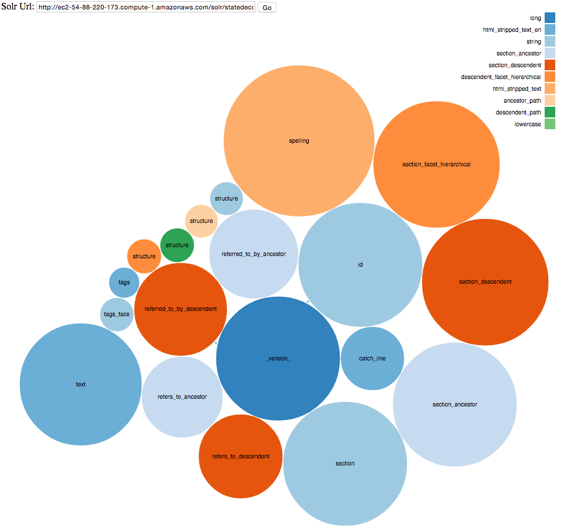
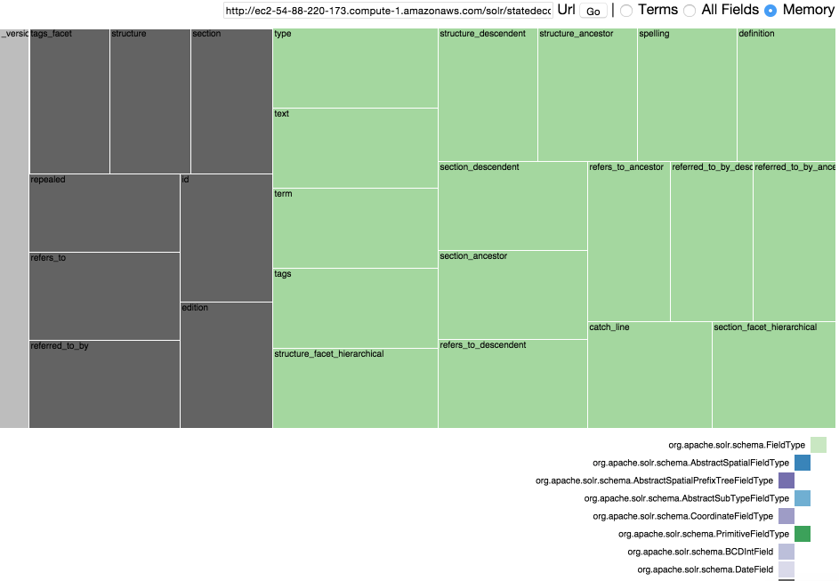

An experiment in visualizing your Solr index via term counts, document counts, and memory usage per field and data type.
This project is maintained by o19s
These are some experiments with D3 in visualizing details of a Lucene index via the Solr APIs. Primarily a learning exercise for me to learn JavaScript, especially Ajax calls, and dip my toes into D3. Each of the experiments is based heavily on work that other folks have done!
The bubble map shows you how many terms there are per field. The colors let you get a sense of which field types contain the most terms. The name of each field is in the center of the bubble. The layout is random, there isn't any meaning to where the bubbles are placed. The colours are also laid out to be in a logical range, but internally have no meaning. Hence dark blue is long and light blue is string.

The treemap experiment was more ambitious and came out in response to a "data management" person asking me:
Can I have the entity relatinoship diagram for Solr?
After scratching my head for while on what I could give them that wasn't just a single "table", and looking like a snarky jerk, I figured how about better understanding all the various field types that make up a Lucene index. Even better would be to organize the types according to their object hierarchy. For bonus points, I tried to also give a sense not just of term count, but of how much memory each field would take up.

In the tree map I show each field, with a colour coded organization of the hierarchy of field types, as Solr understands them. For example, a TrieLongField is a subclass of a TrieField. The size of the box shows you how many terms make up the field in relationship to overall term count size.
The All Fields option shows you all the fields that you have defined in your schema.xml, and lets you see what fields you define but don't actually use.
The Memory option attempts to use the rules that are defined in this Memory calculator spreadsheet: https://svn.apache.org/repos/asf/lucene/dev/trunk/dev-tools/size-estimator-lucene-solr.xls It's not perfect though!
Play with the treemap demo here.
A huge vote of appreciation to Julia Bauder for her project Pivot to Flare that got me much of the way on the tree map.
Also, check out what Erik Hatcher has done with tree maps and Solr.
Check the project out from GitHub at https://github.com/o19s/bearded-wookie
Start up a locally running server via:
ruby -run -e httpd . -p 9090And then browse to http://localhost:9090/bubble/bubble2.html and http://localhost:9090/treemap/
Shoot feedback to me at epugh@opensourceconnections.com or @dep4b.